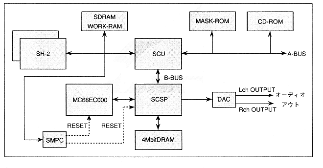

SCSP is a multi-function game sound generator LSI that combines PCM sound generator and sound DSP.
Figure 1.1 shows the structure of the sound system and the surroundings of the sound system.
There is MC68EC000 as CPU for sound processing that constitutes Saturn sound block. This provides various controls for the sound block.
SCSP generates and processes speech synthesis. Built-in sound generator for 32 slots, DSP for sound effects, digital mixer and timer, and interrupt controller.
Sound memory is directly connected to SCSP. The capacity is 4Mbit (512KByte), and it contains sound programs and data, sound waveform data, etc. This memory is accessed by the sound CPU, SCSP, and main CPU (SH-2, SCU). In addition to this, the main CPU, sound CPU, and D / A converter are connected to SCSP, and it can be operated independently of the main system in the sound system.
Figure 1.1 Sound system and peripheral parts
